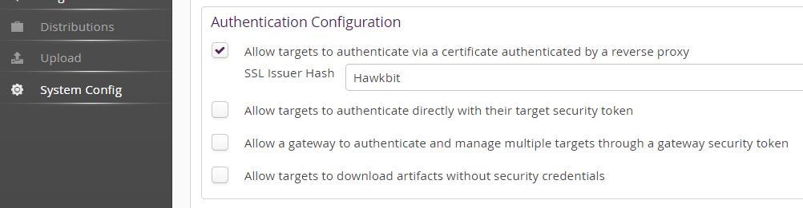
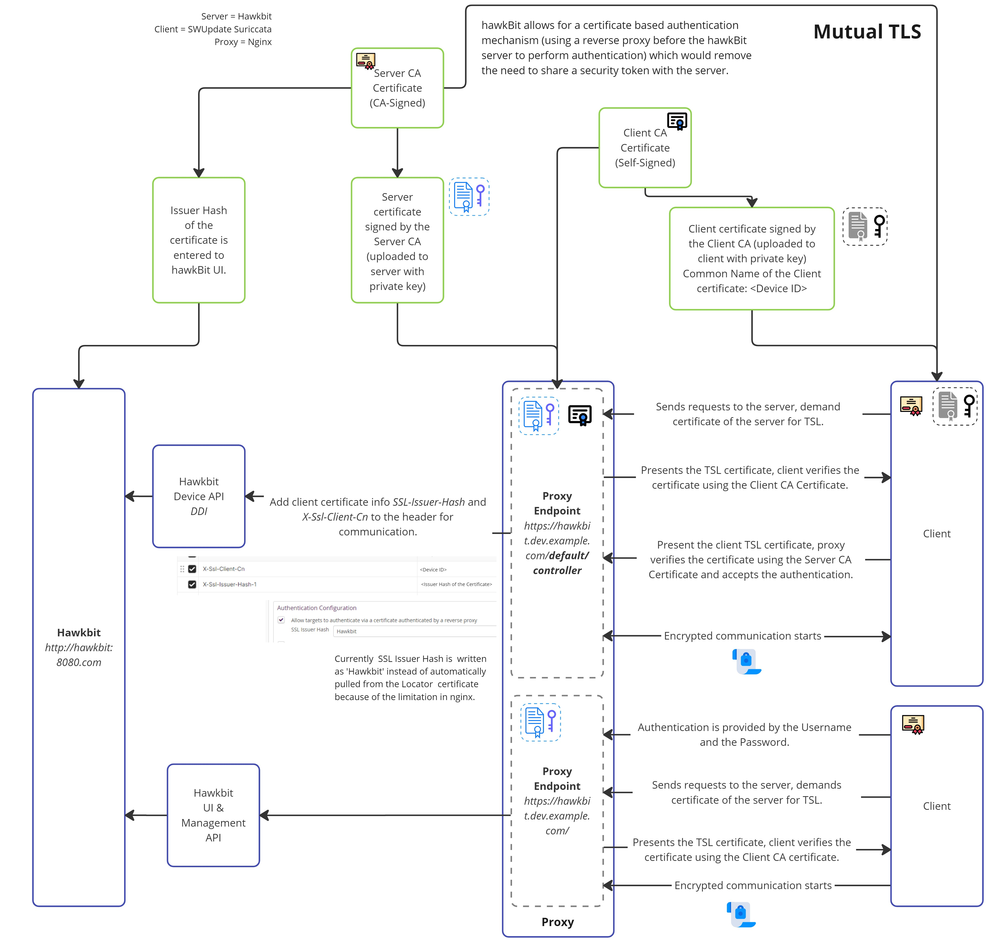

Authentication
A hawkBit update server can be accessed in four different ways:
- Direct Device Integration (DDI) API by targets.
- Management API by 3rd party applications.
- Device Management Federation (DMF) API by 3rd party applications through AMQP.
DDI API Authentication Modes
Security Token
hawkBit supports multiple ways to authenticate a target against the server. The different authentication modes can be individual enabled and disabled within hawkBit. Both on system level (with Spring Boot properties) as per individual tenant.
Target Security Token Authentication
There is a 32 alphanumeric character security-token for each created target within IoT hawkBit. This token can be used to authenticate the target at hawkBit through the HTTP-Authorization header with the custom scheme TargetToken.
GET /SPDEMO/controller/v1/0e945f95-9117-4500-9b0a-9c6d72fa6c07 HTTP/1.1
Host: your.hawkBit.server
Authorization: TargetToken bH7XXAprK1ChnLfKSdtlsp7NOlPnZAYY
The target security token is provided in DMF API as part of the update message in order to allow DMF clients to leverage the feature or can it be manually retrieved per target by Management API or in the Management UI in the target details.
Note: needs to be enabled in your hawkBit installation and in the tenant configuration. That allows both the operator as well as the individual customer (if run in a multi-tenant setup) to enable this access method. See DdiSecurityProperties for system wide enablement.
The additional activation for the individual tenant:

Gateway Security Token Authentication
Often the targets are connected through a gateway which manages the targets directly and as a result are indirectly connected to the hawkBit update server.
To authenticate this gateway and allow it to manage all target instances under its tenant there is a GatewayToken to authenticate this gateway through the HTTP-Authorization header with a custom scheme GatewayToken. This is of course also handy during development or for testing purposes. However, we generally recommend to use this token with care as it allows to act in the name of any device.
GET /SPDEMO/controller/v1/0e945f95-9117-4500-9b0a-9c6d72fa6c07 HTTP/1.1
Host: your.hawkBit.server
Authorization: GatewayToken 3nkswAZhX81oDtktq0FF9Pn0Tc0UGXPW
Note: needs to be enabled in your hawkBit installation and in the tenant configuration. That allows both the operator as well as the individual customer (if run in a multi-tenant setup) to enable this access method. See DdiSecurityProperties for system wide enablement.
The additional activation for the individual tenant:

Anonymous access
Here we offer general anonymous access for all targets ( see DdiSecurityProperties) which we consider not really sufficient for a production system but it might come in handy to get a project started in the beginning.
However, anonymous download on the other side might be interesting even in production for scenarios where the artifact itself is already encrypted.
The activation for the individual tenant:

Certificate Authentication by Reverse Proxy
hawkBit offers a certificate-based authentication mechanism, also known as mutual TLS (mTLS), which eliminates the need to share a security token with the server. To implement this, you’ll require a reverse proxy deployed in front of the hawkBit server to handle authentication. This process involves obtaining certificates (and keys) for both the client and the reverse proxy and configuring hawkBit accordingly.
Initially, you’ll need to obtain certificates (and keys) for these components from the same or different Certificate Authorities (CAs). Once you have acquired certificates you have to set them up to both the client and the hawkBit server.
Then you shall enable Allow targets to authenticate via a certificate authenticated by a reverse proxy and set the fingerprint of the client certificate issuer(s) (as a comma separated list).
To authenticate the request to hawBit the following condition shall be met:
- the common name of the client certificate shall match the controller/client id
- the SSL Issuer(s) hash of the presented client certificate shall be set for the tenant. For that, in Hawkbit’s UI section, under system configuration, you shall enable ‘Allow targets to authenticate via a certificate by an reverse proxy’ and set the hash of the client certificate issuer(s) (as a comma separated list).

You can use the following command to get the issuer hash:
openssl x509 -in client_certificate.crt -issuer_hash -noout`
Here is an example diagram that shows all the communication between the hawkBit, reverse proxy and client. For the sake of simplification we assume that there are not intermediate certificates and the certificate and key are as follows:
-
client_ca.crt signs client.crt
-
server_ca.crt signs server.crt
-
client has the client.crt, client.key and server_ca.crt
-
server (in this case reverse proxy) has the server.crt, server.key and client_ca.crt

Example - Nginx Reverse Proxy Configurations
Nginx doesn’t support obtaining the issuer hash without addons. Therefore, in this example we bypass sending real SSL Issuer hash to hawhBit but do certificate issuer validation at Nginx and then supply shared (between Nginx and hawkBit) fixed hash “Hawkbit”. You could use any value here as long as it is matched with the Allow targets to authenticate via a certificate authenticated by a reverse proxy setting in the hawkBit UI. Note that for multi-tenant scenarios with different trusted CAs this example won’t work.
-
Hawkbit Configurations
There are also some configurations that you need update when you deployed your hawkbit service.
You need to add the given setting to your hawkBit configurations so that hawkBit can generate the URLs according to the https that the client will use to download. If you’re deploying hawkBit as a Docker container, add these configurations as environmental values in the docker-compose.yml file.
server.forward-headers-strategy=NATIVE
-
In Hawkbit’s UI section, under system configuration, make sure to select Allow targets to authenticate via a certificate authenticated by a reverse proxy and input the fixed issuer hash as “Hawkbit”. This can be whetever you have configured in the nginx configuration in
proxy_set_header X-Ssl-Issuer-Hash-1below. -
After placing your certificates and keys, you need to deploy your proxy server and apply the provided configurations. You can apply mutual TLS specifically to the URL given below to implement the process only for devices using the Device Integration API:
hawkbit.dev.example.com/default/controller/This ensures that other clients, like UI users, can connect to hawkBit without requiring client certificates. They can use Username and Password in the Management API, eliminating the need for authentication and making it more user-friendly.
# Nginx Hawkbit Configurations
# Gets the Common Name of the certificate from the client certificate.
map $ssl_client_s_dn $ssl_client_s_dn_cn {
default "";
~CN=(?<CN>[^,]+) $CN;
}
server {
listen 80;
listen [::]:80;
server_name hawkbit.dev.example.com www.hawkbit.dev.example.com;
server_tokens off;
location /.well-known/acme-challenge/ {
root /var/www/certbot;
}
location / {
return 301 https://hawkbit.dev.example.com$request_uri;
}
}
server {
listen 443 ssl;
listen [::]:443 ssl;
server_name hawkbit.dev.example.com;
ssl_certificate /etc/nginx/ssl/live/hawkbit.dev.example.com/server.crt;
ssl_certificate_key /etc/nginx/ssl/live/hawkbit.dev.example.com/server.key;
ssl_client_certificate /etc/nginx/client-cer/client_ca.crt;
ssl_verify_client optional;
ssl_verify_depth 3;
# For devices that is using device integration API,
# Mutual TLS is required.
location ~*/.*/controller/ {
if ($ssl_client_verify != SUCCESS) {
return 403;
}
proxy_pass http://hawkbit.dev.example.com:8080;
proxy_set_header Host $http_host;
proxy_set_header X-Real-IP $remote_addr;
proxy_set_header X-Forwarded-For $proxy_add_x_forwarded_for;
# Client certificate Common Name and Issuer Hash is required
# for auth in hawkbit.
proxy_set_header X-Ssl-Client-Cn $ssl_client_s_dn_cn;
proxy_set_header X-Ssl-Issuer-Hash-1 Hawkbit;
# These are required for clients to upload and download software.
proxy_request_buffering off;
client_max_body_size 1000m;
}
# For clients that is using UI or Management API
location / {
proxy_pass http://hawkbit.dev.example.com:8080;
proxy_set_header Host $http_host;
proxy_set_header X-Real-IP $remote_addr;
proxy_set_header X-Forwarded-For $proxy_add_x_forwarded_for;
proxy_request_buffering off;
client_max_body_size 1000m;
}
}
- To deploy Nginx, you could use a
.ymlfile. Here’s an exampledocker-compose.ymlfile for Nginx Docker.
version: '3'
services:
webserver:
image: nginx:latest
ports:
- 80:80
- 443:443
restart: always
volumes:
- ./nginx/conf/:/etc/nginx/conf.d/:ro
- ./certbot/www:/var/www/certbot/:ro
- ./certbot/conf/:/etc/nginx/ssl/:ro
- ./client-cer/:/etc/nginx/client-cer/
- ./landing-page/:/etc/webserver/landing-page
certbot:
image: certbot/certbot:latest
volumes:
- ./certbot/www/:/var/www/certbot/:rw
- ./certbot/conf/:/etc/letsencrypt/:rw
/client-cer/:/etc/nginx/client-cer/ is the designated location for the certificate authority that has signed the
client certificate. The presented client certificate will be verified against this CA.
- After successfully generating your certificates with the correct chain, deploying your Nginx and Hawkbit services with appropriate configurations, and updating the settings on the device side, you will be able to establish a certificate-based authentication mechanism. This will eliminate the necessity of sharing a security token with the server.
Swupdate Suricatta Configurations
If the client is utilizing the SWUpdate Suricatta service, the configurations on the device or client side should also be adjusted as follows. Remember to change id, url and certificate names to your needs.
The location of the config file is /etc/swupdate/swupdate.conf
suricatta :
{
tenant = "default";
id = "device_id";
url = "https://hawkbit.dev.example.com";
nocheckcert = false;
cafile = "server_ca.crt";
sslkey = "/etc/ssl/certs/client.key";
sslcert = "/etc/ssl/certs/client.crt";
};
If your client service is a linux, you can use the command bellow to see the logs produced by the swupdate.
journalctl --follow -u swupdate
Testing
You can test the communication by using the Curl command below to see if you successfully implemented mutual TLS:
curl -L -v --cert client.crt --key client.key --cacert server_ca.crt https://hawkbit.dev.example.com/default/controller/v1/{device-id}
In the UI, after uploading an SWU package and requesting a firmware update, you can use the link below to attempt to install the software package.
curl -L -v --cert client.crt --key client.key --cacert server_ca.crt https://hawkbit.dev.example.com/default/controller/v1/{device-id}/softwaremodules/{artifact-id}/artifacts/hawkbit_updated_5.swu --output outputfile
DMF API
Authentication is provided by RabbitMQ vhost and user credentials that is used for the integration.
Management API
- Basic Auth